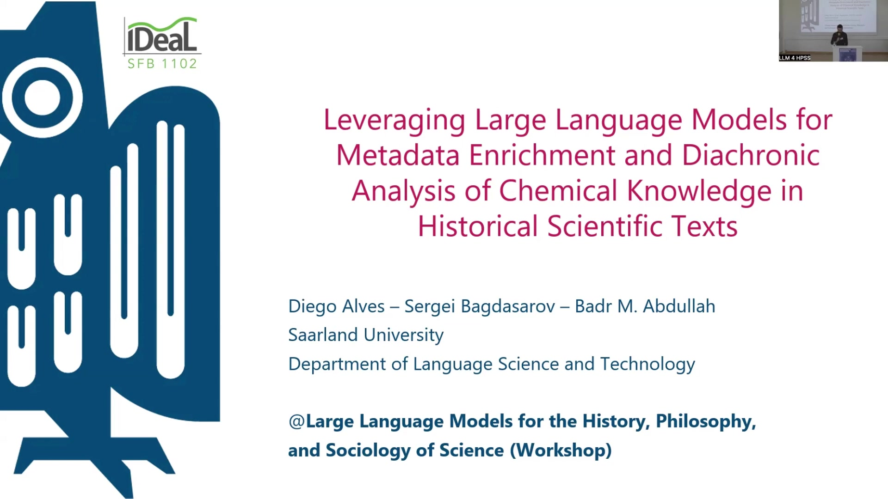
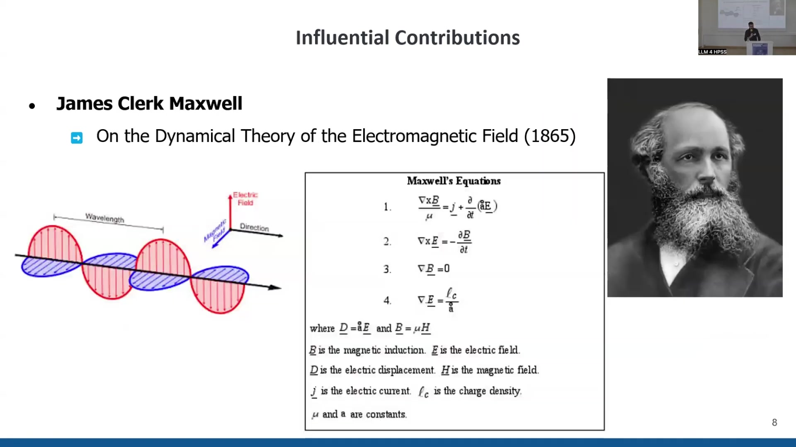
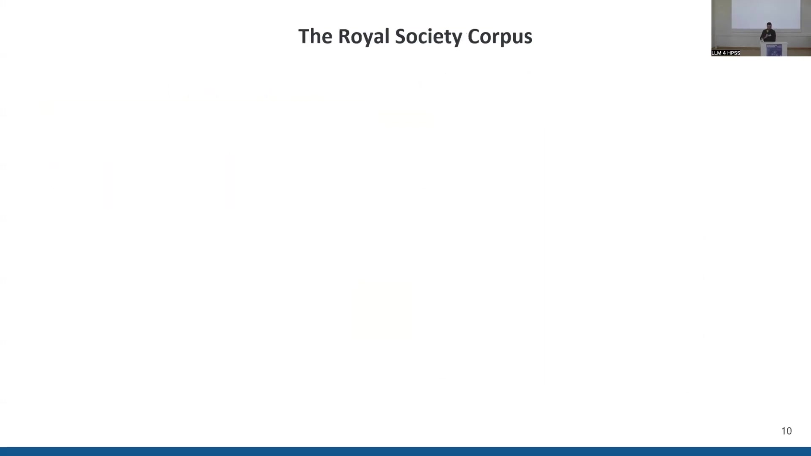
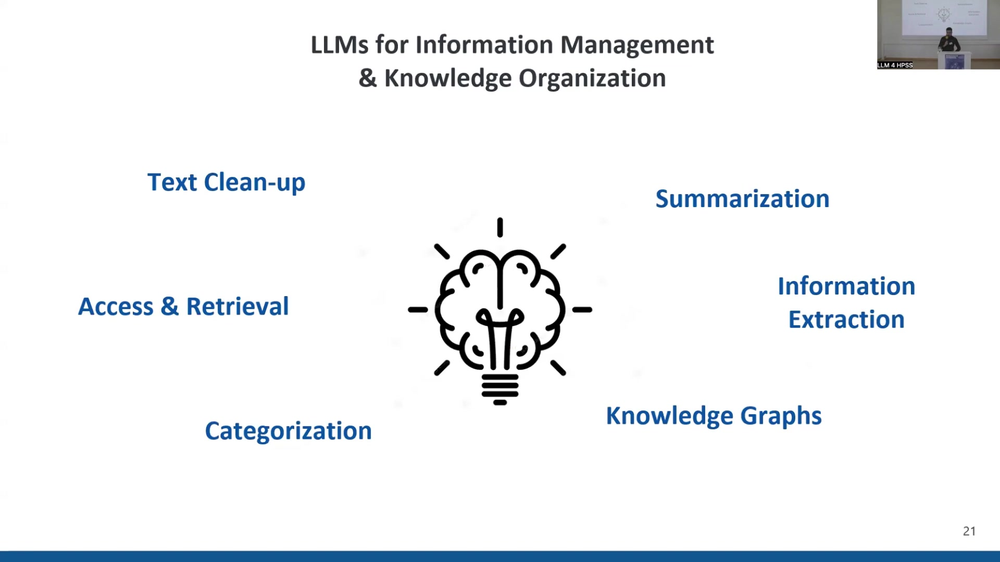
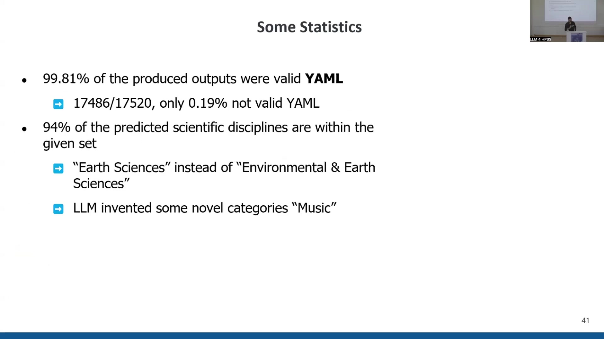
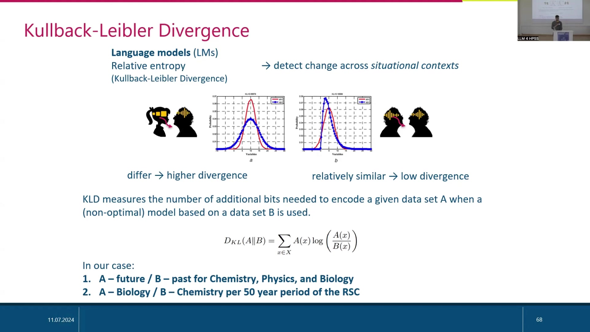

16 Leverage Large Language Models for Metadata Enrichment and Diachronic Analysis of Chemical Knowledge in Historical Scientific Texts
Overview
Researchers presented a two-part investigation into leveraging Large Language Models (LLMs) for enhancing metadata and conducting diachronic analyses of chemical knowledge within historical scientific texts. The first part detailed the application of LLMs to improve metadata for a diachronic corpus, specifically focusing on categorising articles by scientific discipline, assigning semantic tags (topics), and generating abstractive summaries. The second part presented a case study analysing the evolution of the chemical space over time across different disciplines, aiming to identify periods of heightened interdisciplinarity and knowledge transfer. This work utilised the Philosophical Transactions of the Royal Society of London, a corpus spanning from 1665 to 1996, comprising nearly 48,000 texts and almost 300 million tokens. For metadata enrichment, the team employed Llama 3, particularly the Hermes-2-Pro-Llama-3-8B model, fine-tuned for structured output. For the diachronic analysis of chemical terms, ChemDataExtractor, a Python module, identified chemical substances, and Kullback-Leibler Divergence (KLD) measured changes in their usage over time, both within and between disciplines such as chemistry, biology, and physics. Key findings include the successful application of LLMs for article categorisation, the identification of distinct evolutionary patterns in chemical terminology across disciplines, and the detection of knowledge transfer instances between scientific fields.16.1 Project Objectives and Structure

Researchers outlined a project, presented by Diego Alves and Sergey and developed in collaboration with LLM expert Badr Abdullah, titled "Leverage Large Language Models for Metadata Enrichment and Diachronic Analysis of Chemical Knowledge in Historical Scientific Texts." The investigation divides into two distinct parts. Part one explores the application of Large Language Models (LLMs) to enhance the metadata associated with historical texts, particularly within a diachronic corpus. This enhancement focuses on categorising articles by scientific discipline, assigning relevant semantic tags or topics, and creating abstractive summaries. Subsequently, part two delves into a case study analysing the evolution of the chemical space across different disciplines over time. This analysis specifically seeks to identify periods marked by significant interdisciplinarity and instances of knowledge transfer between fields.
16.2 Data Source: The Philosophical Transactions of the Royal Society
The project investigates how scientific English evolved over time to become an optimised medium for expert-to-expert communication, concurrently analysing phenomena such as knowledge transfer and the identification of influential papers and authors. For this purpose, researchers utilised the Philosophical Transactions of the Royal Society of London. First published in 1665, this journal holds the distinction of being the oldest scientific journal in continuous publication. It played a pivotal role in the development of scientific communication, notably establishing the practice of peer-reviewed paper publication as a primary means for disseminating scientific knowledge, and it continues to be a highly respected publication today.
Throughout its history, the journal has featured numerous influential contributions. For instance, in the 17th century, Isaac Newton published his "New Theory about Light and Colours" (1672). The 18th century saw Benjamin Franklin's account of "The 'Philadelphia Experiment'" concerning the electrical kite. Later, in the 19th century, James Clerk Maxwell detailed his "Dynamical Theory of the Electromagnetic Field" (1865). Beyond these seminal works, the corpus also contains more curious papers, such as Monsieur Autour's speculations on the inhabitants of the Earth and Moon. However, the current research refrains from fact-checking or assessing the scientific validity of these historical papers, focusing instead on other analytical dimensions.
16.3 The Royal Society Corpus (RSC) 6.0 and Existing Metadata

Researchers employed the Royal Society Corpus (RSC) version 6.0 full for their analysis. This extensive collection covers over 300 years of scientific communication, from 1665 to 1996, encompassing nearly 48,000 individual texts and amounting to almost 300 million tokens. The corpus already possesses some encoded metadata, including author names, century, year, and volume information.
A previous study attempted to define research disciplines and classify papers within this corpus using Latent Dirichlet Allocation (LDA) topic modelling. The output from this LDA analysis, however, revealed a mixture of disciplines, sub-disciplines, and even types of texts, such as "Observation" and "Reporting," rather than purely thematic categories. A visual representation of this earlier classification showed a hierarchical structure with categories like "LifeScience1," "LifeScience2," alongside "Chemistry" and "Physics," highlighting the need for a more refined categorisation approach.
16.4 Part I: LLMs for Metadata Enrichment and Knowledge Organisation

The first part of the project focused on employing Large Language Models (LLMs) to enhance existing metadata and generate new metadata types for the historical texts. Researchers aimed to leverage LLMs for several information management and knowledge organisation tasks. These included text clean-up, summarisation, improved information extraction, categorisation, and enhanced access and retrieval capabilities, with the potential to feed structured information into knowledge graphs.
To illustrate the process, an example article titled "A Spot in one of the Belts of Jupiter" was considered. Such historical texts often present syntactic complexities characteristic of older writing styles. For this article, the LLM was tasked with providing a hierarchical categorisation (e.g., Discipline: Astronomy, Sub-discipline: Planetary Science), a list of relevant index terms (e.g., Astronomy, Jupiter, Telescopes), and a concise "Too Long; Didn't Read" (TL;DR) summary. An example summary provided was: "The author reports observing a spot in one of Jupiter's belts using a 12-foot telescope. The spot was found to move from east to west within two hours, indicating movement on the planet's surface."
16.5 LLM Selection and Prompt Engineering for Metadata Generation

Researchers selected Llama 3 for their metadata enrichment tasks, a new release in the Llama LLM family offering 8 billion (8B) and 70 billion (70B) parameter versions, with a 400B parameter model currently in training. This model, accessible via Hugging Face, reportedly offers significant improvements over predecessors like Mistral and Llama 2. The team specifically utilised instruction-tuned versions, deemed suitable for their objectives, and employed Hermes-2-Pro-Llama-3-8B, a variant fine-tuned for generating structured output, particularly JSON and YAML.
A detailed system prompt guided the LLM. The prompt first established a role: "Act as a librarian and organize a collection of historical scientific articles from the Royal Society of London, published between 1665 and 1996." It then defined the objective: to read, analyse, and organise the corpus to create a structured database facilitating research. The input was described as OCR-extracted text snippets with existing metadata.
Four main tasks were specified. Task A involved reading and analysing the article to suggest an alternative, more content-reflective title. Task B required writing a concise 3-4 sentence TL;DR summary in simple language, suitable for a high school student. Task C mandated the identification of exactly five main topics, conceptualised as Wikipedia-style keywords for scientific sub-fields. Finally, Task D involved identifying a primary scientific discipline from a predefined list of nine (Physics, Chemistry, Environmental Earth Sciences, Astronomy, Biology Life Sciences, Medicine Health Sciences, Mathematics Statistics, Engineering Technology, Social Sciences Humanities) and a corresponding second-level sub-discipline, which the LLM could freely define but could not be one of the primary disciplines.
An example input provided to the LLM included metadata for Isaac Newton's 1672 letter, which has a very long original title, along with a text snippet. The desired output was specified in YAML format, exemplified by a revised title ("A New Theory of Light and Colours"), five topics (e.g., "Optics," "Refraction"), a TL;DR summary, and the categorisation ("Physics," "Optics Light"). The prompt concluded by strictly requiring valid YAML output.
16.6 LLM Output Validation and Discipline Distribution Analysis

Initial sanity checks on the LLM's output revealed promising results. An impressive 99.81% of the generated outputs (17,486 out of 17,520) conformed to a valid YAML structure, with only a minor 0.19% failing this validation. Regarding the prediction of scientific disciplines, 94% fell within the predefined set of nine categories. However, some hallucinations and errors occurred; for instance, the LLM occasionally produced minor variations like "Earth Sciences" instead of the specified "Environmental Earth Sciences," or invented entirely novel categories such as "Music." In other cases, it mistakenly included the numerical index of a discipline as part of its name or classified sub-disciplines like "Neurology" or "Zoology" as primary disciplines. Despite these anomalies, the researchers concluded that the majority of papers received correct discipline assignments.
An analysis of the distribution of scientific disciplines over time, based on the LLM's categorisation, revealed distinct trends. Up until the end of the 18th century, the distribution of articles across disciplines appeared relatively homogeneous. A notable peak in chemical articles emerged in the late 18th century, coinciding with the chemical revolution, after which chemistry established itself as a principal pillar of the Royal Society's publications. Progressing into the 19th and 20th centuries, three main pillars—Biology, Physics, and Chemistry—became dominant.
Furthermore, researchers visualised the TL;DR summaries using t-SNE projections. This technique demonstrated how different disciplines clustered in the semantic space. Chemistry appeared centrally, with significant overlap with Physics and Biology. Conversely, Humanities, Astronomy, and Mathematics formed more isolated clusters. This static visualisation hinted at the potential for diachronic analysis, enabling the observation of shifts and evolving overlaps between disciplines over time. These LLM-derived discipline categorisations subsequently informed the diachronic analysis of the chemical space.
16.7 Part II: Diachronic Analysis of the Chemical Space Methodology
The second part of the research concentrated on a diachronic analysis of the chemical space, focusing on three disciplines most prevalent in the corpus: Chemistry, Biology, and Physics. To achieve this, researchers first needed to extract chemical terms from the texts. They employed ChemDataExtractor, a Python module designed for the automatic identification of chemical substances. Initially, applying ChemDataExtractor to the full text of articles produced a significant amount of noise. Consequently, a refined two-pass approach was adopted: the tool was first run on the texts, and then re-applied to the list of substances generated in the initial pass, which effectively reduced the noisy output.
For analysing the evolution of this chemical space, the team utilised Kullback-Leibler Divergence (KLD). KLD, or relative entropy, serves to detect changes across different situational contexts. It quantifies the number of additional bits required to encode a given dataset (A) when using a non-optimal model based on a different dataset (B). Higher KLD values indicate greater dissimilarity between the datasets, whilst lower values suggest similarity.
Researchers applied KLD in two distinct ways. Firstly, they conducted an intra-discipline diachronic analysis by comparing a future period (dataset A) with a past period (dataset B) within each of the three disciplines (Chemistry, Physics, and Biology) independently. This involved a sliding window technique: for a given central year, chemical term frequencies from a 20-year window preceding it were compared against those from a 20-year window succeeding it. The central year was then advanced by five years, and the comparison repeated, allowing them to trace the evolution of the chemical space within each discipline over the entire timeline. Secondly, they performed an inter-discipline comparative analysis, making pairwise comparisons of the chemical space in Chemistry versus Physics, and Chemistry versus Biology, based on 50-year segments of the Royal Society Corpus.
16.8 KLD Analysis Results: Intra-Disciplinary Evolution

The Kullback-Leibler Divergence (KLD) analysis per discipline revealed that the evolutionary trend of the chemical space was quite similar across Chemistry, Biology, and Physics. Peaks and troughs in KLD values, indicating periods of significant change or stability respectively, occurred at roughly the same times for all three fields. Notably, towards the end of the analysed timeline, the KLD plots tended to flatten, and the overall KLD values decreased, suggesting less variation in chemical terminology between successive future and past periods.
Researchers then focused on a prominent KLD peak observed in the late 18th century (approximately 1740-1810). The KLD methodology permitted a closer examination of the specific chemical substances contributing most to this divergence. During the sub-period of 1776-1816, in both Biology and Physics, one or two particular elements exhibited extremely high KLD values, indicating they were primary drivers of change in the chemical lexicon of those fields. Despite these drivers, the analysis showed that largely the same set of chemical elements featured prominently across Chemistry, Biology, and Physics during this era.
This pattern contrasted significantly with observations from a later period, specifically the second half of the 19th century (approximately 1850-1900). Here, the KLD graphs for Biology and Physics were much more populated with influential chemical substances, and the individual contributions of these elements to the overall KLD were more uniform. A differentiation in the types of substances also became apparent: Biology's chemical lexicon began to evolve distinctly towards terms associated with biochemistry. Simultaneously, Chemistry and Physics showed an increasing focus on noble gases and radioactive elements, many of which were discovered towards the end of the 19th century.
16.9 KLD Analysis Results: Inter-Disciplinary Comparison and Knowledge Transfer
Pairwise comparisons using Kullback-Leibler Divergence (KLD) further illuminated the distinct chemical focuses of the disciplines, particularly evident in word clouds representing the second half of the 20th century. When comparing Chemistry and Biology, the word cloud for Biology featured a greater prominence of substances related to biochemical processes within living organisms. In contrast, Chemistry's word cloud highlighted substances associated with organic chemistry, such as hydrocarbons and benzene. A comparison between Chemistry and Physics revealed that Physics's chemical lexicon was characterized by a higher frequency of metals—including rare earth metals, semi-metals, and radioactive metals—alongside noble gases. These interdisciplinary comparisons effectively identified thematic divergences in chemical terminology.
Crucially, this pairwise KLD analysis also enabled the detection of instances termed "knowledge transfer." This phenomenon describes situations where a chemical element, initially ranked as highly distinctive of Chemistry in an earlier period, subsequently becomes more characteristic of either Biology or Physics in a later period. For example, when comparing Chemistry and Physics, the element tin was found to be distinctive of Chemistry during the first half of the 18th century but shifted to become more distinctive of Physics in the second half of that century. Similar shifts for other elements were observed in the early 20th century. A comparable pattern emerged in the Chemistry versus Biology comparison during the 20th century, where elements becoming distinctive of Biology were, once again, frequently related to biochemical processes.
16.10 Conclusion and Future Work
In conclusion, the researchers successfully employed a Large Language Model (LLM) to improve article categorisation and topic modelling for texts within their historical corpus. Building upon these LLM-generated classifications, they conducted a diachronic analysis of the chemical space across three key disciplines—Chemistry, Biology, and Physics—and performed interdisciplinary comparisons of this chemical space.
Looking ahead, several avenues for future work present themselves. For the LLM-focused component (Part I), plans include testing alternative LLMs and undertaking a formal evaluation of the results obtained from the Llama 3 model. Regarding the analysis of the chemical space (Part II), researchers intend to pursue a more fine-grained interdisciplinary analysis, potentially by experimenting with different sizes for diachronic sliding windows and varying comparison timeframes. Furthermore, they aim to expand the analysis to include additional disciplines, such as comparing Chemistry with Medicine, and to explore tracing the evolution of the chemical space using the concept of surprisal.